7. Del sistema de Figma a la hoja de estilos
En los apartados anteriores has repasado las herramientas: el HTML, el CSS, Sass, ITCSS, BEM y la preparación de las imágenes. En este vas a usarlas juntas sobre tu propio proyecto. Al terminar la Órbita 2 tenías en Figma un sistema visual completo (colores con modo oscuro, escala tipográfica, espaciado, radios, elevación y componentes con sus estados), y aquí vas a ver cómo se traslada cada pieza al código. Las decisiones visuales ya están tomadas y justificadas, así que tu trabajo consiste en llevarlas a la hoja de estilos sin perder ninguna por el camino.
Este apartado funciona como una hoja de ruta para maquetar. Cómo funciona cada herramienta lo tienes en los apartados anteriores, y aquí te vas a centrar en qué herramienta corresponde a cada pieza de tu sistema. En la auditoría oral te voy a señalar un botón cualquiera de tu aplicación y te voy a preguntar por qué tiene ese relleno y de qué token sale (RA2-f).
Los ejemplos están en CSS, porque así se ve lo que llega al navegador, pero en tu proyecto los escribirás en SCSS, repartidos en las capas de ITCSS y con los nombres de BEM.

Antes de empezar
Comprueba que te ha quedado lo esencial de los apartados anteriores intentando contestar sin mirar:
- ¿Cuándo es un
<a>y cuándo un<button>lo que en tu mockup parece un botón? - ¿Por qué se da estilo con clases y no con ids?
- ¿Por qué los tamaños van en
rem? - ¿Cuándo usarías Flexbox y cuándo Grid?
Si alguna se te atasca, vuelve al apartado correspondiente antes de seguir.
Tokens: de las variables de Figma a CSS
En Figma configuraste la sintaxis de código de cada variable, y ahora verás para qué: es el nombre que tendrá en tu hoja de estilos. La regla del módulo es que cada variable de Figma tiene una propiedad personalizada con el mismo nombre (RA1-d). En un equipo, esa coincidencia es lo que permite que quien diseña y quien programa hablen del mismo color con la misma palabra.
Los primitivos se declaran en :root con su valor real, y los semánticos apuntan a un primitivo con var(). Para el modo oscuro, light-dark() recibe el primitivo de cada modo, igual que la tabla de modos de Figma:
:root {
color-scheme: light dark;
/* Primitivos */
--blue-200: #99C1F1;
--blue-500: #1A5FB4;
--gray-50: #F6F5F4;
--gray-900: #1E1E24;
/* Semánticos */
--color-primary: light-dark(var(--blue-500), var(--blue-200));
--color-surface: light-dark(var(--gray-50), var(--gray-900));
--color-on-surface: light-dark(var(--gray-900), var(--gray-50));
}
En tu proyecto no escribirás esto a mano: lo generarás con los mapas y los bucles del apartado de Sass.
La regla de la Órbita 2 sigue en pie: los componentes usan solo tokens semánticos. Si en la regla de un botón aparece var(--blue-500) o #1A5FB4, ese botón no cambiará en el modo oscuro. Para comprobarlo, busca # y los nombres de los primitivos en tus ficheros: solo deberían aparecer en Settings.
Para saber más: un interruptor de modo oscuro
Con color-scheme: light dark, la aplicación sigue la preferencia del sistema operativo. Si quieres un interruptor para elegir el modo, basta con que cambie un atributo del <html> y que una regla fuerce el esquema, porque light-dark() obedece siempre a color-scheme:
Cambiar el atributo es trabajo de JavaScript, que verás en DWEC.
Tokens de componente
En la Órbita 2 quedó pendiente un tercer nivel de tokens, los tokens de componente: variables que solo existen dentro de un componente y apuntan a un semántico. Sirven para que cada variante cambie solo unas pocas variables:
.button {
--button-bg: var(--color-primary);
--button-fg: var(--color-on-primary);
background-color: var(--button-bg);
color: var(--button-fg);
}
.button--danger {
--button-bg: var(--color-error);
--button-fg: var(--color-on-error);
}
La prueba del color principal
En la Órbita 2 comprobaste tu sistema cambiando el color principal en Figma. En el código, la prueba es la misma: selecciona el <html> en el inspector, cambia el valor de --blue-500 y recorre la aplicación. Si queda algún elemento con el azul anterior, hay un valor escrito a mano en algún sitio.
Tipografía
Cada nivel de tu escala se convierte en un token, y la propiedad font permite escribir peso, tamaño, altura de línea y familia en un solo valor:
:root {
--font-family-base: "Atkinson Hyperlegible", system-ui, sans-serif;
--font-heading-1: 700 2rem/1.25 var(--font-family-base); /* 32 / 40 */
--font-body: 400 1rem/1.5 var(--font-family-base); /* 16 / 24 */
--font-label: 600 0.875rem/1.43 var(--font-family-base); /* 14 / 20 */
}
Al pasar los valores de Figma hay que hacer dos conversiones:
- Tamaño en
rem: los píxeles entre 16 (32 px son2rem). Así la escala respeta la letra al 200 % de Manuel (RA5-a). - Altura de línea sin unidad: la altura entre el tamaño (24 entre 16 son
1.5).
Para los títulos muy grandes, que en el móvil ocupan demasiado, usa la tipografía fluida con clamp() de los apuntes de CSS3.
Espaciado, radios y elevación
Ningún relleno, margen o separación se escribe con un número suelto: todos salen de tu escala de espaciado, en rem, igual que los radios y las sombras salen de sus tokens. Si en tu código aparece padding: 13px, o es un error o te falta un valor en la escala, y en los dos casos hay que volver a Figma.
:root {
--space-2: 0.5rem; /* 8 px */
--space-4: 1rem; /* 16 px */
--radius-md: 0.5rem;
--elevation-1: 0 1px 3px rgb(0 0 0 / 12%);
}
Para separar los elementos de un componente, usa gap en lugar de márgenes: un margen va pegado al elemento y se lo lleva a cualquier sitio donde lo reutilices, mientras que gap lo decide el contenedor. Es la misma idea que el espaciado del Auto layout.
Del Auto layout a Flexbox
El Auto layout de Figma está basado en Flexbox, así que cada opción tiene su propiedad:
| En Figma (Auto layout) | En CSS (Flexbox) |
|---|---|
| Dirección horizontal o vertical | flex-direction: row o column |
| Espaciado entre elementos | gap |
| Espaciado en Auto | justify-content: space-between |
| Relleno | padding |
| Alineación | justify-content y align-items |
| Fill container | flex: 1 |
| Wrap | flex-wrap: wrap |
La tarjeta de pista era en Figma un Auto layout vertical con 16 píxeles de relleno y 8 de separación, con una fila horizontal dentro para el nombre y el precio:
.card {
display: flex;
flex-direction: column;
gap: var(--space-2);
padding: var(--space-4);
}
.card__header {
display: flex;
justify-content: space-between; /* espaciado "Auto" en Figma */
align-items: baseline;
}
Para comprobarlo, pon el componente de Figma y el inspector uno al lado del otro y compara los valores. El modo Dev de Figma te enseña el CSS de cada capa, pero en píxeles y sin tus tokens, así que úsalo solo para comprobar valores.
De la retícula a Grid
La retícula de la Órbita 2 (cuatro columnas en el móvil, con medianiles y márgenes de 16 píxeles) se construye con Grid:
.o-layout {
display: grid;
grid-template-columns: repeat(4, 1fr);
column-gap: var(--space-4);
padding-inline: var(--space-4);
max-width: 75rem; /* el ancho máximo del contenido en escritorio */
margin-inline: auto;
}
En la práctica, para los listados de tarjetas suele bastar el patrón repeat(auto-fit, minmax(16rem, 1fr)), que reparte las tarjetas en tantas columnas como quepan. La retícula de Figma te sirve para comprobar que, a cada ancho, todo cae donde lo dibujaste.
Breakpoints
El breakpoint correcto es el ancho en el que tu diseño empieza a verse mal, y en DIW añadimos un segundo criterio: tus personas. Si Lucía usa un móvil de 360 píxeles y Manuel una tableta, esos son los anchos que tienes que cuidar, y el breakpoint estará en algún punto entre los dos.
Escribe el CSS mobile first, con los breakpoints en rem y con el mixin de breakpoint de Sass, y usa container queries para los componentes que aparecen en sitios de distinto ancho (RA2-i).
Estados
Cada variante de estado que dibujaste en Figma tiene su selector en CSS:
| Variante en Figma | Selector en CSS |
|---|---|
| Hover | :hover |
| Foco | :focus-visible |
| Pulsado | :active |
| Desactivado | :disabled o [aria-disabled="true"] |
| Seleccionado | :checked o [aria-pressed="true"] |
| Error | :user-invalid |
El foco del teclado también es una variante de tu sistema. Si no la dibujaste en Figma, dibújala ahora, porque en la Órbita 4 recorrerás la aplicación con el tabulador. Y recuerda que ningún estado puede depender solo del color: la hora ocupada se tacha, además de aclararse. En el apartado 8 tienes el código completo de los estados de cada componente.
Movimiento, impresión y peso
Tres decisiones más completan el paso al código:
- Movimiento. Transiciones cortas (entre 150 y 300 milisegundos) sobre propiedades concretas, siempre respetando
prefers-reduced-motion. Si tu sistema usa siempre las mismas duraciones, conviértelas en tokens. - Impresión. Una hoja
@media printpara que el justificante de la reserva salga limpio (RA2-d). - Peso. Cada componente de Figma tiene una sola regla en el CSS, y no hay reglas para componentes que no existen. La pestaña Cobertura del inspector de Chrome te dice qué parte de tu CSS no se usa. Las WSG piden que el sistema de diseño sirva precisamente para no duplicar estilos.
Validar
Pasa tu main.css por el validador del W3C y guarda la evidencia (RA2-h). Si marca como error alguna función reciente (light-dark(), @layer), compruébala en Baseline y explícalo en tu documentación.
Si usas una IA para escribir o revisar tu CSS, anótalo en el CHANGELOG.md. Ten en cuenta que no conoce tus tokens, y que lo que devuelva vendrá lleno de valores escritos a mano que tendrás que sustituir.
Antes de seguir
Comprueba con tu aplicación que puedes hacer todo esto sin tocar ninguna regla de componente:
- Cambiar un primitivo en el inspector y que el cambio llegue a todas las pantallas.
- Pasar al modo oscuro y que no quede nada ilegible.
- Subir la letra al 200 % y que nada se corte ni se solape.
- Recorrer el happy path con el tabulador viendo el foco en cada paso.
- Buscar
#ypxen tu SCSS y que solo aparezcan en Settings y en los bordes de 1 píxel.
Si algo falla, casi siempre es por la misma causa: un valor escrito a mano en lugar de un token.